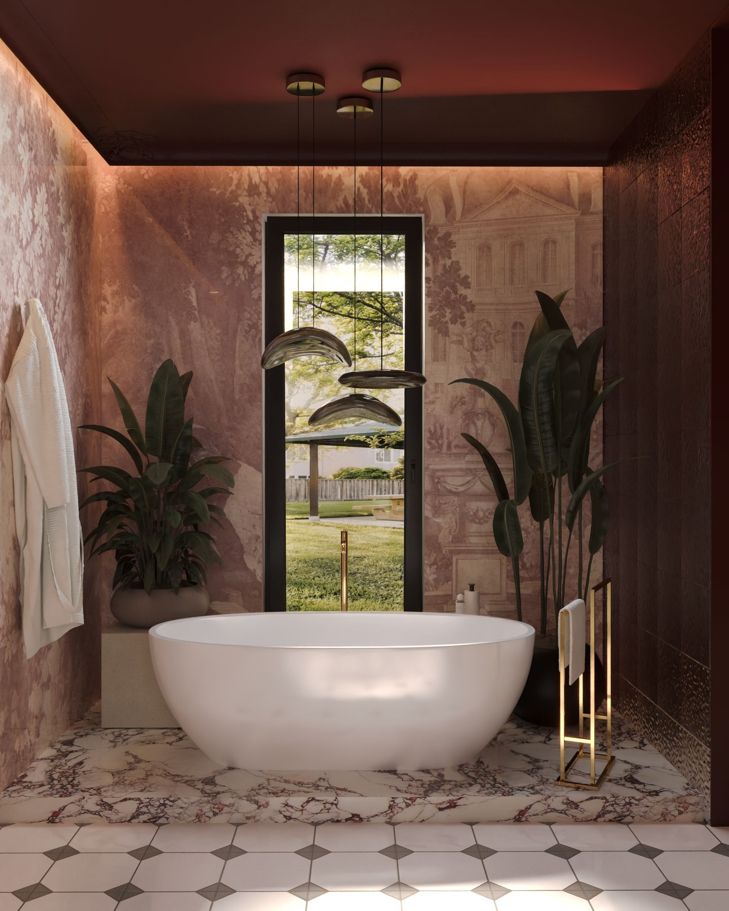
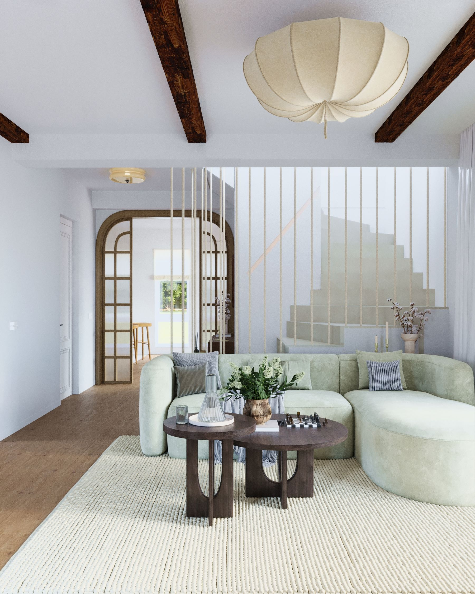
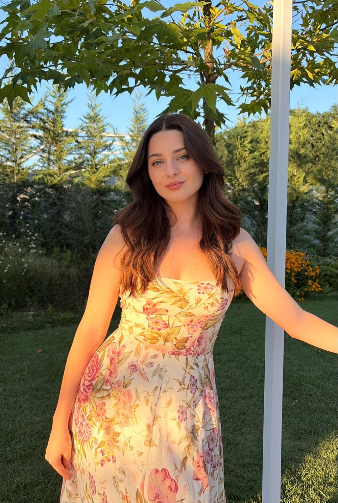

Residential interiors — Bucharest
Studio
Raëlle Design plans interiors the way a material behaves — one stone, one grain of wood, one plaster tone — then lets everything else in the room answer to it. We work on full residential projects, from layout to the last cutting board on the counter.
Selected Work



Transformarea unei vechi case cu accente interbelice — tâmplăria originală a fost păstrată, iar interiorul a fost regândit cu mici accente tematice stilului arhitectural original.
Un interior în stil Japandi reinterpretat după nevoile clienților — multe spații de depozitare, într-o atmosferă caldă și aerisită. Mobilier custom-made, cu fișe tehnice gata de implementare.
Proiect realizat în colaborarePornit de la nevoia unui makeover, proiectul a ajuns la o transformare mult mai elaborată, maximizând tot potențialul casei.
Potențialul de transformare al unui apartament din perioada comunistă într-un interior de standard actuale, fără intervenții structurale.
O bucătărie curajoasă în stil farmhouse, care exprimă personalitatea clienților până în cel mai mic detaliu.
Makeover în stil Japandi cu influențe moderniste.
Un interior atemporal ce îmbină stilul neoclasic cu influențe luxury moderniste, unde culoarea de accent este pusă în prim plan.

About
I'm an architect and a graduate of the "Ion Mincu" University of Architecture and Urban Planning, with a strong passion for interior design.
My architectural background allows me to approach every project as a complete and cohesive process — from the initial concept and spatial planning to technical detailing, custom furniture design, and final implementation. I combine creative vision with technical precision to create interiors that are both aesthetically refined and thoughtfully designed for everyday living.
At the heart of my work is a close relationship with each client. By understanding their lifestyle, routines, and aspirations, I am able to translate their needs into spaces that feel personal, functional, and authentic. I believe a successful interior should not only look beautiful, but also reflect the identity of the people who inhabit it and enhance the way they experience their home.
With careful attention to proportions, materials, and every individual detail, I aim to create timeless interiors defined by balance, character, and a strong sense of belonging.
Services
Concept through completion — layout, materials, lighting, furniture, and styling.
Reworking a floor plan around how you actually move through and use each room.
Cabinetry and joinery drawn and detailed specifically for the space, not adapted to it.
Final layer — ceramics, textiles, and objects sourced to match the room's material story.
Pricing
Trei niveluri de implicare, de la îndrumare punctuală până la management complet de șantier.
Ideal pentru cei care au nevoie de puțină îndrumare și modificări în locuința lor.
Preț personalizat
Calculat în funcție de metraj și complexitatea proiectului · TVA inclus
Servicii complete de proiectare și îndrumare, pentru un proiect complet de design interior.
40 € / mp
TVA inclus
Management și implementare completă — pentru cei care vor să scape de grija șantierului.
57 € / mp
TVA inclus
FAQ
În medie, între 8-14 săptămâni în funcție de complexitatea și mărimea proiectului. De la prima consultanță până la predarea documentației tehnice.
Nu se prea întâmplă asemenea cazuri, deoarece stabilim clar de la bun început direcția, și nu trecem în etapa următoare de 3D până nu ajungem la o propunere vizuală care să reflecte întocmai dorințele și cerințele clientului. Însă dacă se întâmplă acest lucru, putem adapta și modifica în limita contractuală proiectul.
Da. În funcție de nevoile tale, un buget minim este de 2000 euro pentru a acoperi partea de concept, până la minim 25.000 euro pentru partea de implementare — aici în funcție de cât mobilier custom, ce finisaje alegi și cu ce echipă de muncitori alegi să lucrezi. De cele mai multe ori, datorită colaborărilor mele cu diferiți furnizori, reducerile de care beneficiezi ajung să acopere o parte din acest onorariu minim de concept.
Mă ocup în ceea ce privește managementul proiectului. Supervizez, coordonez echipele și mă ocup de comenzi, astfel încât la finalul acestei etape tu să te poți muta într-un apartament exact ca cel din concept. Ofer recomandări de echipe de muncitori cu care colaborez, însă nu este obligatoriu să lucrezi cu acestea. Pe viitor voi oferi proiectele la cheie, în care mă voi ocupa eu cu echipa mea de muncitori de la început până la final.
Da. Avem deja proiecte în București, Dâmbovița, Județul Hunedoara. Ofer consultanță video online, și mă deplasez la destinația proiectului atunci când este necesar în anumite puncte cheie.